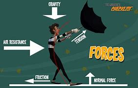

In physics, a force is an influence that can change the motion of an object. A force can cause an object with mass to change its velocity (e.g. moving from a state of rest), i.e., to accelerate. Force can also be described intuitively as a push or a pull. A force has both magnitude and direction, making it a vector quantity. It is measured in the SI unit of newton (N). Force is represented by the symbol F (formerly P). The original form of Newton's second law states that the net force acting upon an object is equal to the rate at which its momentum changes with time. If the mass of the object is constant, this law implies that the acceleration of an object is directly proportional to the net force acting on the object, is in the direction of the net force, and is inversely proportional to the mass of the object. Concepts related to force include: thrust, which increases the velocity of an object; drag, which decreases the velocity of an object; and torque, which produces changes in rotational speed of an object. In an extended body, each part usually applies forces on the adjacent parts; the distribution of such forces through the body is the internal mechanical stress. Such internal mechanical stresses cause no acceleration of that body as the forces balance one another. Pressure, the distribution of many small forces applied over an area of a body, is a simple type of stress that if unbalanced can cause the body to accelerate. Stress usually causes deformation of solid materials, or flow in fluids.
Here Is a Picture of Forces
